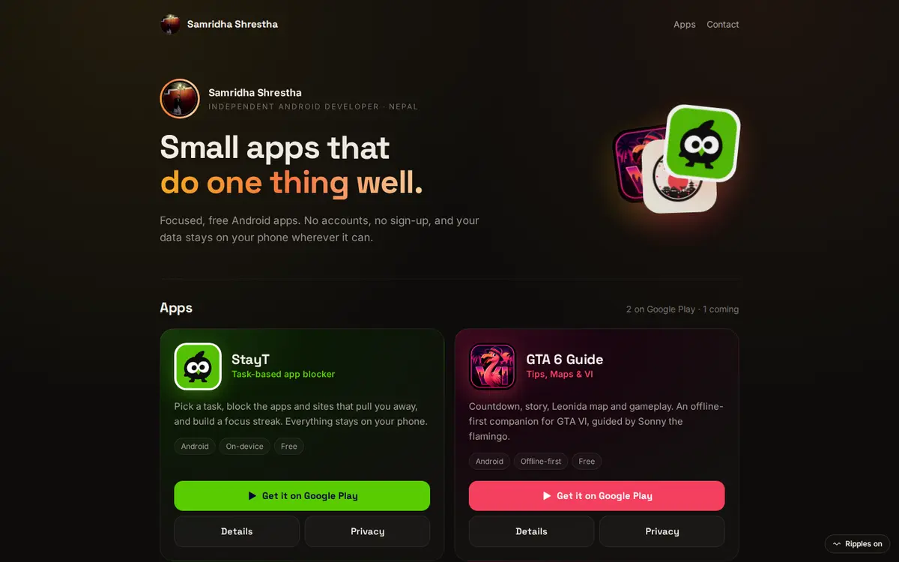

Samridha
Shrestha
I build segmentation models for maps
AI/ML engineer from Kathmandu. I train deep learning models on geospatial data and build retrieval systems that put language models into real products, along with the web stack that ships them.
Software engineer at Octacore Solutions
Accuracy of the custom U-Net, with 0.92 mean IoU and 0.96 Dice.
CNN accuracy on Kathmandu Valley data, ahead of the Random Forest baseline.
U-Net, ResU-Net and DeepLabV3, trained and benchmarked on the same geospatial data.
Three kinds of work
Deep learning on maps
U-Net, ResU-Net and DeepLabV3 models that read satellite and terrain layers to find landfill sites and flood risk.
See the research → 02RAG and LLM systems
Hybrid BM25 and vector search with a reranker and memory, so a shop's chatbot answers with the right product.
See the work → 03Apps and web
Android apps on Google Play, Wear OS watch faces, and marketing sites for clients, from design to deploy.
apps.samridhashrestha.com.np ↗Small apps that do one thing well
StayT blocks distractions until your task is done. GTA 6 Guide is an offline companion for the game. Anime Studio, a living Wear OS watch face, is next.
Visit apps.samridhashrestha.com.np
Building retrieval chatbots at Octacore. Keyword search and vector search run side by side, a reranker sorts the results, and the customer gets the right product back.
- Based inHattigauda, Kathmandu
- StudiedB.E. Computer Engineering, ACEM, 2021–2026
- FocusDeep learning, computer vision, RAG and LLM systems
- Working atOctacore Solutions ↗
- Appsapps.samridhashrestha.com.np ↗
- Off dutyMusic, gaming, sports, anime